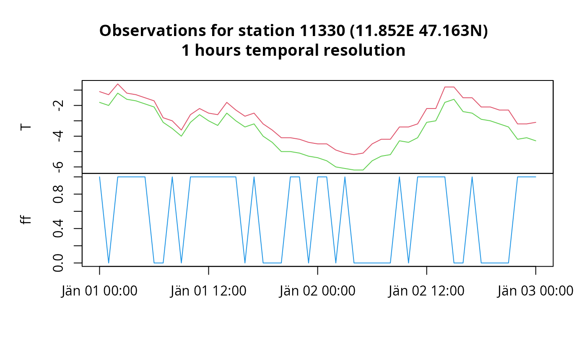
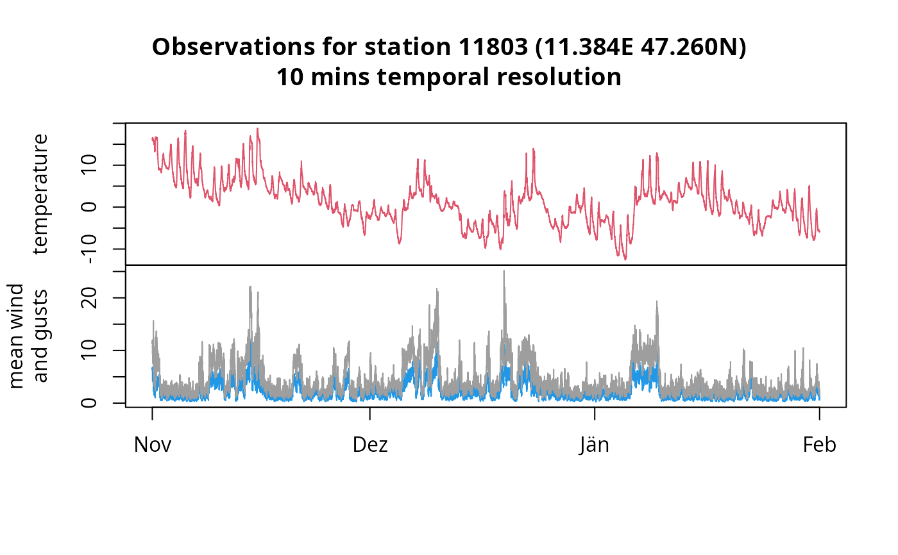
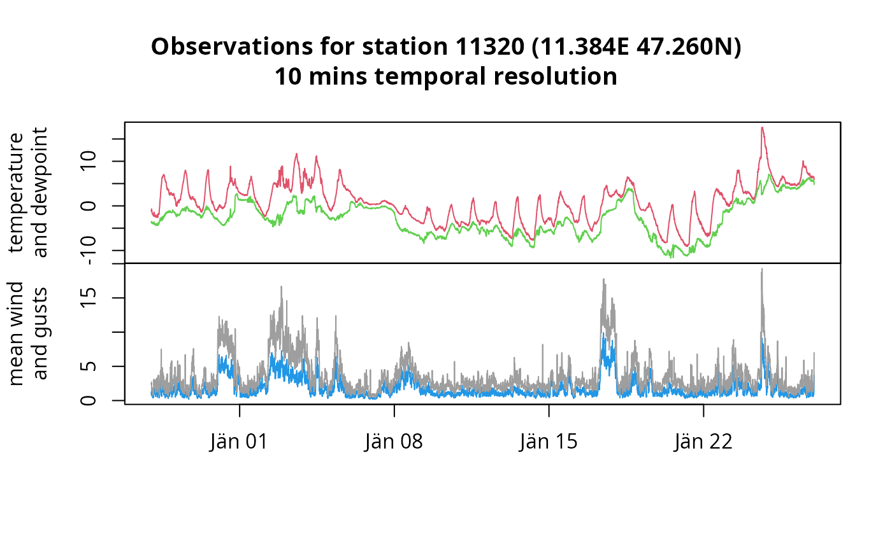

Downloading Station Data
gs_stationdata.RdAccessing the API endpoint v<version>/station,
see https://dataset.api.hub.zamg.ac.at/v1/docs/quickstart.html.
Usage
gs_stationdata(
mode,
resource_id,
parameters = NULL,
start = NULL,
end = NULL,
station_ids,
expert = FALSE,
version = 1L,
verbose = FALSE,
format = NULL,
limit = 5e+05,
config = list()
)Arguments
- mode
character, specify mode of data.
- resource_id
character, specify resource identifier of data.
- parameters
character vector to define which parameters to process.
- start, end
object of class
Date,POSIXt, orcharacter. In case of character in a non-ISO formatformatcan be used (see below). Not needed (ignored) whenmode = "current".- station_ids
integer vector with the station IDs to be processed.
- expert
logical, defaults to
FALSE. IfTRUEthe script will not check if the input arguments are valid. May result in unsuccessful requests but increases the speed asgs_datasets()andgs_metadata()do not have to be evaluated.- version
integer, API version (defaults to
1L).- verbose
logical, if set
TRUEsome more output will be produced.- format
NULL(default) or character string, used ifstart/endare characters in a specific (non ISO) format.- limit
integer, API data request limit. If the request sent by the user exceeds this limit, the request will be split into batches automatically.
- config
empty list by default; can be a named list to be fowrarded to the
httr::GETrequest if needed.
Value
If only data for one single station (length(station_ids) == 1) is requested,
a zoo object will be returned if data is available. If no data is available,
NULL will be returned.
When multiple stations are requested a list of zoo object (or NULL if no data
is available) is returned. The name of the list corresponds to the station id requested.
Details
This function is a convenience function for downloading different sets of station data from the ZAMG data hub (now Geosphere). The API may change and additional resources may be added, for details see https://dataset.api.hub.zamg.ac.at/v1/docs/daten.html#available-datasets.
To see what's available call gs_datasets("station").
The API has a limit for the number of elements for one request. The calculation is based on the number of expecte elements (i.e., number of stations times number of parameters times number of time steps). This function will pre-calculate the number of expected elements and split the request into batches along the time dimension - if needed. For current limits see https://dataset.api.hub.zamg.ac.at/v1/docs/daten.html#limitationen-beim-datendownload.
Examples
######################################################################
## Latest observations for two tawes stations in Innsbruck.
## Parameters TL (air temperature 2m above ground), TS (air temperature 5cm
## above ground) and RR (amount of rain past 10 minutes).
innsbruck <- gs_stationdata(mode = "current",
resource_id = "tawes-v1-10min",
parameters = c("TL", "TS", "RR"),
station_ids = c(11121, 11320),
expert = TRUE)
# Air temp
sapply(innsbruck, function(x) x$TL)
#> 11121 11320
#> 22.5 23.2
# Precipitation (rain)
sapply(innsbruck, function(x) x$RR)
#> 11121 11320
#> 0 0
######################################################################
## Example for synop data
## Loading meta information
meta <- gs_metadata(mode = "historical", resource_id = "synop-v1-1h")
## For station information check
head(meta$stations)
#> Simple feature collection with 6 features and 11 fields
#> Geometry type: POINT
#> Dimension: XY
#> Bounding box: xmin: 9.848611 ymin: 47.1625 xmax: 15.36694 ymax: 48.69083
#> Geodetic CRS: WGS 84
#> type id group_id name state altitude
#> 1 INDIVIDUAL 11330 NA MAYRHOFEN Tirol 640
#> 2 INDIVIDUAL 11328 NA ACHENKIRCH Tirol 904
#> 3 INDIVIDUAL 11375 NA AFLENZ Steiermark 783
#> 4 INDIVIDUAL 11157 NA AIGEN IM ENNSTAL Steiermark 641
#> 5 INDIVIDUAL 11301 NA ALBERSCHWENDE Vorarlberg 715
#> 6 INDIVIDUAL 11019 NA ALLENTSTEIG Niederösterreich 599
#> valid_from valid_to has_sunshine has_global_radiation is_active
#> 1 2007-08-28 2100-01-01 NA NA TRUE
#> 2 1998-09-24 2016-10-04 NA NA FALSE
#> 3 1992-10-08 2100-01-01 NA NA TRUE
#> 4 1972-01-01 2100-01-01 NA NA TRUE
#> 5 1996-01-16 2100-01-01 NA NA TRUE
#> 6 1988-05-30 2100-01-01 NA NA TRUE
#> geometry
#> 1 POINT (11.85167 47.1625)
#> 2 POINT (11.70528 47.53222)
#> 3 POINT (15.24083 47.54583)
#> 4 POINT (14.13833 47.53278)
#> 5 POINT (9.848611 47.4575)
#> 6 POINT (15.36694 48.69083)
## For available parameters (for this mode/resource_id) check
head(meta$parameters)
#> name long_name
#> 1 C1 Wolkenart der tiefsten Wolkenschicht
#> 2 C2 Wolkenart der 2.tiefsten Wolkenschicht
#> 3 C3 Wolkenart der 3.tiefsten Wolkenschicht
#> 4 C4 Wolkenart der 4.tiefsten Wolkenschicht
#> 5 CH Art der hohen Wolken
#> 6 CL Art der tiefen Wolken
#> desc
#> 1 Wolkenart bzw. Gattung der tiefsten Wolkenschicht (Code Table 0500)
#> 2 Wolkenart bzw. Gattung der 2.tiefsten Wolkenschicht (Code Table 0500)
#> 3 Wolkenart bzw. Gattung der 3.tiefsten Wolkenschicht (Code Table 0500)
#> 4 Wolkenart bzw. Gattung der 4.tiefsten Wolkenschicht (Code Table 0500)
#> 5 Gattung bzw. Art der hohen Wolken (Code Table 0509)
#> 6 Gattung bzw. Art der tiefen Wolken (Code Table 0513)
#> unit
#> 1 Code (Synop)
#> 2 Code (Synop)
#> 3 Code (Synop)
#> 4 Code (Synop)
#> 5 Code (Synop)
#> 6 Code (Synop)
## Getting data over 48 hours for one single station
## Note: If expert = FALSE (default) gs_stationdata()
## will internally call gs_metadata() once more to check
## if the requested station_ids as well as the parameters
## exist for the data set specified (mode/resource_id).
mayrhofen <- gs_stationdata(mode = "historical",
resource_id = "synop-v1-1h",
start = "2020-01-01",
end = "2020-01-03",
parameters = c("T", "Td", "ff"),
station_ids = 11330, verbose = TRUE)
#> Estimated number of elements to be retrieved: 192 (1 x 3 x 48)
#> Number of requests to be performed: 1 (limit set to 5e+05)
#> Calling: https://dataset.api.hub.zamg.ac.at/v1/station/historical/synop-v1-1h?parameters=T,Td,ff&start=2020-01-01T00:00&end=2020-01-03T00:00&station_ids=11330
library("zoo")
plot(mayrhofen, screen = c(1, 1, 2), col = c(2, 3, 4))
## Getting data over 48 hours for three stations simultanously
## Mayrhofen Tirol, Achenkirch Tirol (no data), and Innsbruck Airport Tirol
x <- gs_stationdata(mode = "historical",
resource_id = "synop-v1-1h",
start = "2020-01-01",
end = "2020-01-03",
parameters = c("T", "Td", "ff"),
station_ids = c(11330, 11328, 11120),
expert = TRUE)
#> Warning: no observations available for station 11328; returning NA
plot(x[["11330"]], screen = c(1, 1, 2), col = c(2, 3, 4))

is.null(x[["11328"]])
#> [1] FALSE
plot(x[["11120"]], screen = c(1, 1, 2), col = c(2, 3, 4))
######################################################################
## Example for daily climatological records
meta <- gs_metadata("historical", "klima-v1-1d")
achenkirch <- gs_stationdata(mode = "historical",
resource_id = "klima-v1-1d",
start = "2020-06-01",
end = "2022-12-31",
parameters = c("nied", "nied07", "nied19", "sonne"),
station_ids = 8807,
expert = TRUE)
head(achenkirch)
#> nied nied07 nied19
#> 2020-06-01 -1.0 NA -1
#> 2020-06-02 -1.0 -1.0 -1
#> 2020-06-03 4.2 -1.0 -1
#> 2020-06-04 8.2 4.2 -1
#> 2020-06-05 0.1 8.2 -1
#> 2020-06-06 6.7 0.1 -1
plot(achenkirch, type = "h")
######################################################################
## Example for 10min KLIMA data
# meta$parameter contains available parameters,
# meta$stations available stations
meta <- gs_metadata("historical", "klima-v1-10min")
uibk <- gs_stationdata(mode = "historical",
resource_id = "klima-v1-10min",
start = "2010-11-01",
end = "2011-02-01",
parameters = c("TL", "FFAM", "FFX"),
station_ids = 11803,
expert = TRUE)
plot(uibk,
screens = c(1, 2, 2),
col = c(2, 4, 8),
ylab = c("temperature", "mean wind\nand gusts"))

######################################################################
## Example for 10min TAWES data
## NOTE/WARNING:
## ! "tawes" is not quality controlled and provides limited
## ! amount of data. Consider to use the "klima-v1-10min" data set which
## ! provides long-term historical data for the same stations with the
## ! same temporal resolution, however, the station IDs and
## ! parameter names (as well as avilavle parameters) will differ
## ! (check meta data).
# meta$parameter contains available parameters,
# meta$stations available stations
meta <- gs_metadata("historical", "tawes-v1-10min")
uibk <- gs_stationdata(mode = "historical",
resource_id = "tawes-v1-10min",
start = Sys.Date() - 30,
end = Sys.Date(),
parameters = c("TL", "TP", "FFAM", "FFX"),
station_ids = 11320,
expert = TRUE)
plot(uibk,
screens = c(1, 1, 2, 2),
col = c(2, 3, 4, 8),
ylab = c("temperature\nand dewpoint", "mean wind\nand gusts"))

######################################################################
## Example for annual histalp data
## Requires login; will result in an error for now (todo)
if (FALSE) {
gs_metadata("historical", "histalp-v1-1y")
bregenz <- gs_stationdata(mode = "historical",
resource_id = "histalp-v1-1y",
start = "1854-01-01",
end = "2022-01-01",
parameters = c("R01", "T01"),
station_ids = 23,
expert = TRUE)
plot(bregenz, col = c(4, 2))
}